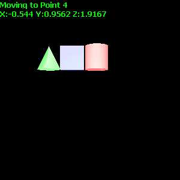
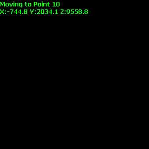
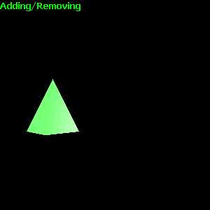

This test positions a group of three primitive objects (without textures) at random locations in the scene:
Steps 1-9: For the first portion of the test, objects will be positioned in visible areas of the scene.

Steps 10 - 14: For the second portion of the test, objects will be positioned outside the visible areas of the scene. Their coordinates will still be reported.

Step 16: The objects are added and removed from the scene, first in sequence, then as a group.
